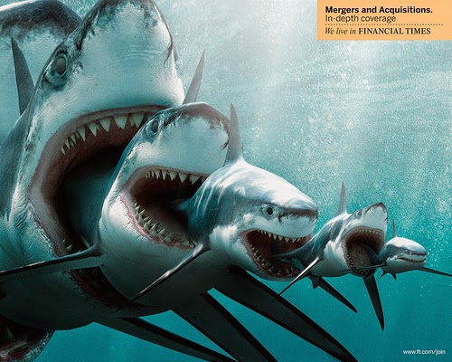

La Evolución del Tiburon
Los tiburones son miembros de la clase Chondrichthyes, la cual incluye también a las rayas y las quimeras. Existen 360 especies de tiburones reconocidas actualmente vivas, distribuidas en 8 órdenes; hay aparte, 7 órdenes extintos.
Los primeros tiburones aparecieron en los océanos hace 400 millones de años, en el Devónico.7 Los tiburones primitivos tenían formas que no tenían parecido a los actuales; como Helicoprion, con su dentadura en forma de espiral; Orthacanthus, tiburón fluvial; Paleocarcharias, antecesor de los actuales tiburones martillo; Hybodus, tiburón que se alimentaba de animales más grandes que él; Paleospinax, uno de los primeros tiburones en tener una estructura ósea como la de tiburones actuales; Stethacanthus, con una estructura en forma de yunque en su espalda; Symmorium, con parecido al Stethacanthus; Protospinax, antecesor moderno de las rayas; Pseudorhina, antecesor de los tiburones ángel; Scapanorhynchus, pariente extinto del actual tiburón duende; Edestus, con dentadura en forma de tijeras; Cretoxyrhina, pariente de Hybodus; Lanma, antecesor del tiburón toro; Cobelodus, con una cabeza pequeña en comparación con el cuerpo; y uno de los más famosos, Carcharodon megalodon, tiburón de 16 metros,8 antecesor del gran tiburón blanco, además de varios tiburones no mencionados.
Distintas tamaños de evoluciones(Megalodón)
Los tiburones han ido evolucionando y radiando generando especies muy especializadas como los tiburones martillo (Sphyrna lewini). Hace alrededor de 100 millones de años surgieron los tiburones modernos. Algunos, como Carcharodon megalodon el cual, como todo otro tiburón extinto, es conocido por sus dientes (los únicos huesos encontrados en estos peces cartilaginosos y, por lo tanto, los únicos fósiles producidos). Una primera reproducción de la mandíbula basada en algunos de los mayores dientes dio como resultado que el pez podía tener hasta 36 m de longitud; los cálculos se revisaron posteriormente y se estimó que podía llegar a medir unos 15 m y se convirtió en el mayor cazador de los ya muy abundantes mamíferos marinos.